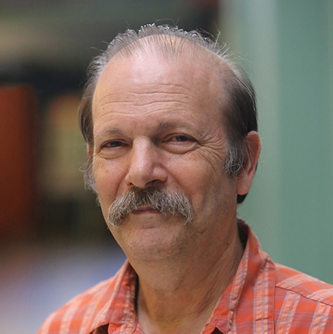
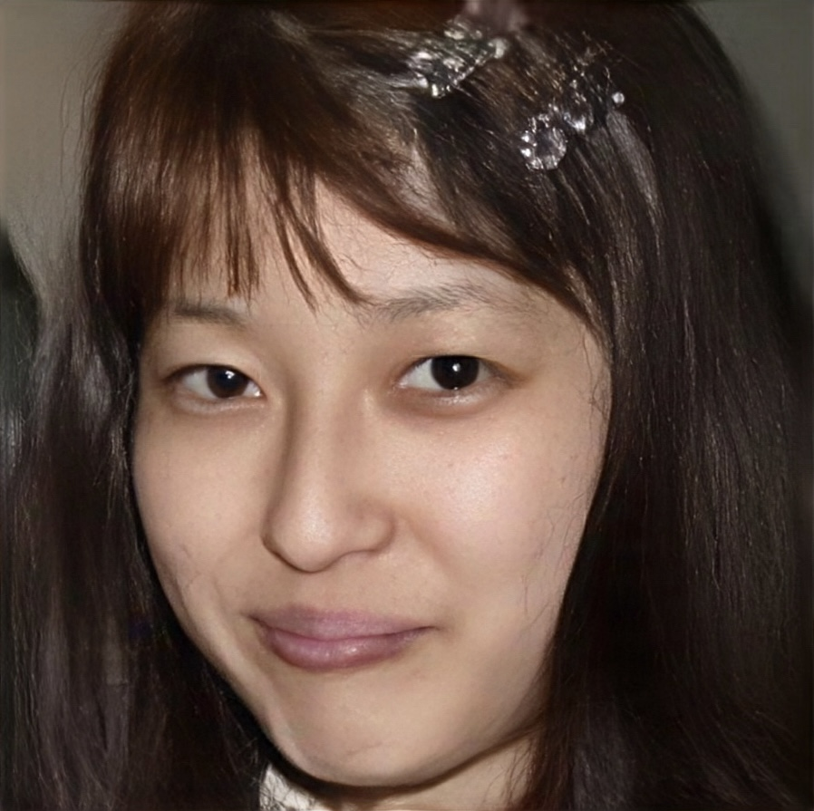

Introduction to the Lecturers
Jingsong Dong
Prof. Dong Jin-Song’s research interests include formal methods, safety and security systems, probabilistic reasoning, sports analytics, trusted machine learning, and verified LLM code synthesis. He co-founded the commercialized PAT verification system, and the commercialized trusted machine learning system Silas (www.depintel.com). He served on the editorial board of ACM Transactions on Software Engineering and Methodology, Formal Aspects of Computing, and Innovations in Systems and Software Engineering, A NASA Journal. He has successfully supervised 33 PhD students, many of whom have become tenured faculty members at leading universities worldwide. He is also a Fellow of the Institute of Engineering Australia. Jin Song developed Markov Decision Process (MDP) models for tennis strategy analysis using PAT, assisting professional players with pre-match analysis (outperforming the world's best). In his spare time, he is a Junior Grand Slam coach and takes pleasure in coaching tennis to his students, and his three children, all of whom have reached the #1 national junior ranking in Singapore/Australia. Two of his children have earned US NCAA Tennis Division-1 full scholarships.
Trusted AI and Reasoning Beyond LLM
The rise of code-centric Large Language Models (LLMs) has reshaped the software engineering world with tools like Copilot and Open AI 03 that can easily generate code. However, there is no correctness guarantee for the code generated by LLMs, which suffer from the hallucination problem. The first part of this talk shows that the program refinement calculus can be used as a formal chain of thought to guide LLM and verify the correctness of the LLM-generated code. The second part of this talk investigates LLM-aided System Design, where LLM-enhanced formal methods agents are proposed. The third part of this talk shows the weakness of LLM in solving strategy analysis problems where formal reasoning techniques are needed.
Giuseppe De Giacomo
 Giuseppe De Giacomo is a Professor of Computer Science at the Department of Computer Science of the University of Oxford. He has been previously a Professor at the Department of Computer, Control, and Management Engineering of the University of Roma "La Sapienza". His research activity concerns theoretical, methodological, and practical aspects in different areas of AI and CS, most prominently Knowledge Representation, Reasoning about Actions, Generalized Planning, Autonomous Agents, Reactive Synthesis and Verification, Service Composition, Business Process Modeling, and Data Management and Integration. He is an AAAI Fellow, ACM Fellow, and EurAI Fellow. He received an ERC Advanced Grant for the project WhiteMech: White-box Self Programming Mechanisms. He was the Program Chair of ECAI 2020 and KR 2014. He is on the Board of EurAI. He chairs the steering committee of the new EurAI yearly summer school ESSAI.
Giuseppe De Giacomo is a Professor of Computer Science at the Department of Computer Science of the University of Oxford. He has been previously a Professor at the Department of Computer, Control, and Management Engineering of the University of Roma "La Sapienza". His research activity concerns theoretical, methodological, and practical aspects in different areas of AI and CS, most prominently Knowledge Representation, Reasoning about Actions, Generalized Planning, Autonomous Agents, Reactive Synthesis and Verification, Service Composition, Business Process Modeling, and Data Management and Integration. He is an AAAI Fellow, ACM Fellow, and EurAI Fellow. He received an ERC Advanced Grant for the project WhiteMech: White-box Self Programming Mechanisms. He was the Program Chair of ECAI 2020 and KR 2014. He is on the Board of EurAI. He chairs the steering committee of the new EurAI yearly summer school ESSAI.
Game-theoretic Approach to LTLf Planning and Synthesis
This course introduces AI planning and program synthesis for tasks (goals) expressed over finite traces. Specifically, borrowing from Formal Methods, we will consider tasks and environment specifications expressed in LTL and in particular its finite trace variant LTLf. We will review the main results and algorithmic techniques to handle planning in nondeterministic domains. Then, we will draw connections with verification, and reactive synthesis, together with their game-theoretic solution techniques. The main catch is that working with these logics can be based on devising suitable 2-player games and finding strategies, i.e., plans, to win them. Specifically, we will cover the following topics: Planning in Nondeterministic Domains, Temporal Logics, LTL, LTLf, PPLTL, Game-theoretic Techniques, and Reactive Synthesis.
John Hughes
 John Hughes is a long-time functional programming researcher, one of the designers of Haskell, and also interested in testing since 2000
when he and Koen Claessen developed the first version of QuickCheck. With Thomas Arts he co-founded a company, Quviq, in 2006,
to commercialize the ideas, and has helped many customers to apply property-based testing in practice since then. He has held professorships
at the University of Glasgow and at Chalmers University, and is now Emeritus Professor at the latter. He is a Fellow of the ACM, and holder of
an ACM SIGPLAN Most Influential Paper award for the original QuickCheck paper.
John Hughes is a long-time functional programming researcher, one of the designers of Haskell, and also interested in testing since 2000
when he and Koen Claessen developed the first version of QuickCheck. With Thomas Arts he co-founded a company, Quviq, in 2006,
to commercialize the ideas, and has helped many customers to apply property-based testing in practice since then. He has held professorships
at the University of Glasgow and at Chalmers University, and is now Emeritus Professor at the latter. He is a Fellow of the ACM, and holder of
an ACM SIGPLAN Most Influential Paper award for the original QuickCheck paper.
Property-based testing
Property-based testing is an approach to software testing that uses generated tests to test software against a formal specification expressed as properties. Originating as a library in Haskell, nowadays it is supported in most programming languages, and is seeing increasing use in industry as well as academia. In these lectures we will begin with a demonstration of property-based testing and some war stories from industrial applications. Then we will introduce the fundamentals of property-based testing: properties, generators, and shrinkers. We will go on to show how systems with internal state are modelled and tested, including some recent features inspired by dynamic logic that have been used to test smart contracts. Finally we will discuss the importance of gathering appropriate statistics when using random testing, and show how unit test ideas can be used to suggest useful statistics to collect. Practical exercises will use Haskell; installation instructions are here: https://www.haskell.org/ghcup/install/. The libraries needed can be installed by
Moshe Y. Vardi
 Moshe Y. Vardi is University Professor and the George Distinguish Service Professor in Computational Engineering. He is the co-recipient of three IBM Outstanding Innovation Awards, the ACM SIGACT Goedel Prize, the ACM Kanellakis Award, the ACM SIGMOD Codd Award, the Blaise Pascal Medal, and the IEEE Computer Society Goode Award. He is the author and co-author of over 800 papers, as well as two books: "Reasoning about Knowledge" and "Finite Model Theory and Its Applications". He is a Guggeheim Fellow, as well as Fellow of the American Mathematical Society, the Association for the Advancement of Artificial Intelligence, the Association for Computing Machinery, the Association for the Advancement of Artificial Intelligence, the American Association for the Advancement of Science, the Institute for Electrical and Electronic Engineers, and the Society for Industrial and Applied Mathematics. He is a member of the US National Academies of Science and of Engineering, the American Academy of Arts and Science, the Royal Society, the European Academy of Science, and Academia Europaea. He holds honorary titles from the Saarland University in Germany, Orleans University in France, UFRGS in Brazil, and the University of Liege in Belgium, the Technical University of Vienna, the University of Edinburgh, the University of Grenoble, the University of Gothenburg, East China Normal University, and the University of Calabria. He is Senior Editor of the Communications of the ACM, after having served for a decade as Editor-in-Chief. Vardi's interests focus on automated reasoning, a branch of Artificial Intelligence with broad applications in computer science , including database theory, computational-complexity theory, multi-agent systems, computer-aided verification, constraint solving, and teaching logic across the curriculum.
Logic in Computer Science
Each lecture is one-hour long, including Q&A.
Nobuko Yoshida
 Nobuko Yoshida is Christopher Strachey Chair of Computer Science in University of Oxford. She is an EPSRC Established Career Fellow and an Honorary Fellow at Glasgow University. Last 10 years, her main research interests are theories and applications of protocols specifications and verifications. She introduced multiparty session types [ POPL’08, JACM ] which received Most Influential POPL Paper Award in 2018 (judged by its influence over the last decade). This work enlarged the community and widened the scope of applications of session types, e.g. runtime monitoring based on Scribble (co-developed with Red Hat) has been deployed to other projects such as cyberinfrastructure in the US Ocean Observatories Initiative (OOI); and widened the scope of her research areas. She received the Test-of-time-award from PPDP'24 and the best paper awards from CC'20, COORDINATION'23 and DisCoTech'23. She received the third Suffrage Science Awards for Mathematics and Computing from MRC for her STEM activity. She is an editor of ACM Transactions on Programming Languages and Systems, ACM Formal Aspects of Computing, Mathematical Structures in Computer Science, Journal of Logical Algebraic Methods in Programming, and the chief editor of The Computer-aided Verification and Concurrency Column for EATCS Bulletin.
From Binary Session Types to Multiparty Session Types
Session types are a type-theoretic approach to specifying communication protocols so that they can be verified by various methods such as static type-checking, type-inference and runtime-checking. The theory has been developed over the last 30 years since the first paper on session types, by Kohei Honda at CONCUR 1993. Recently the topic has attracted increasing interest, and a substantial community and literature have developed. Most theoretical and programming language conferences now include several papers on session types each year. In terms of the technical focus, there have been continuing theoretical developments (notably the generalisation from two-party to multi-party session types) and a variety of implementations of session types as programming language extensions or libraries, covering (among others) Haskell, OCaml, Java, Scala, Rust, Python, MPI-C, C#, Go, TypeScript and Erlang. The course will start from a simple binary session types to multiparty session types. The lectures include the tutorials. Some knowledge of operational semantics or typing systems of any calculi or languages will be helpful but not required.